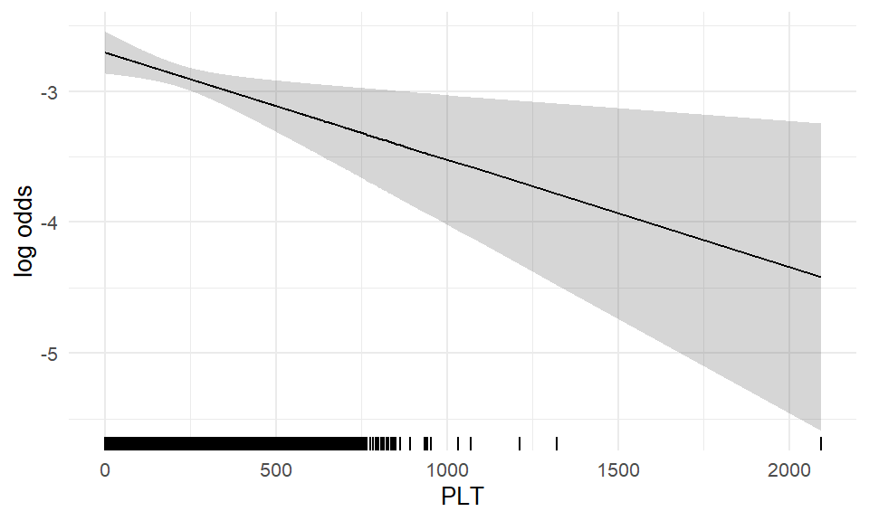
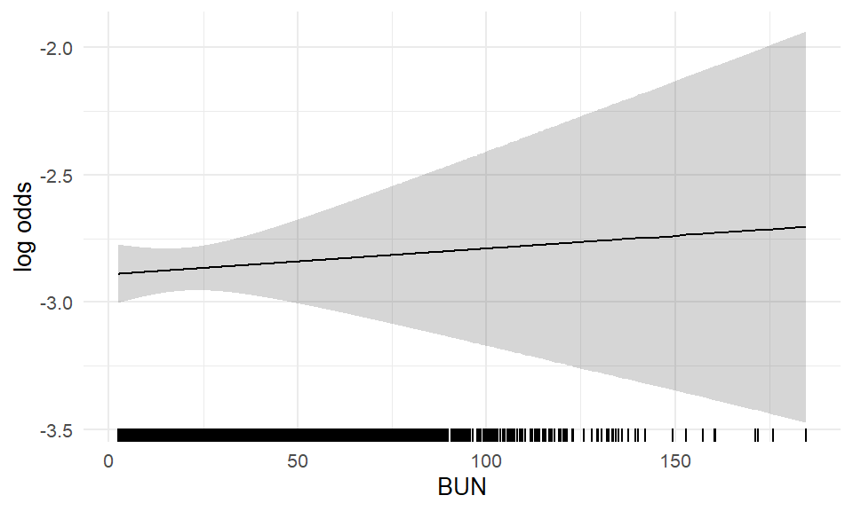
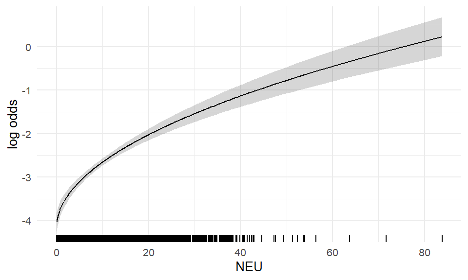
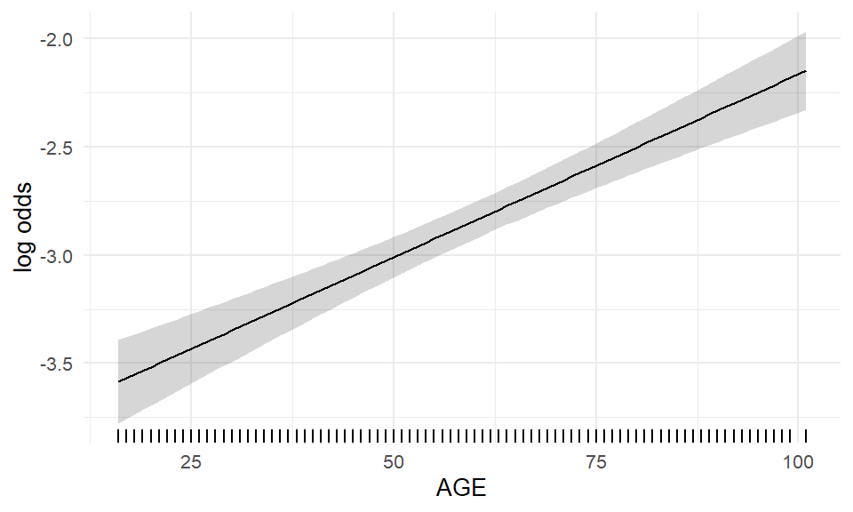
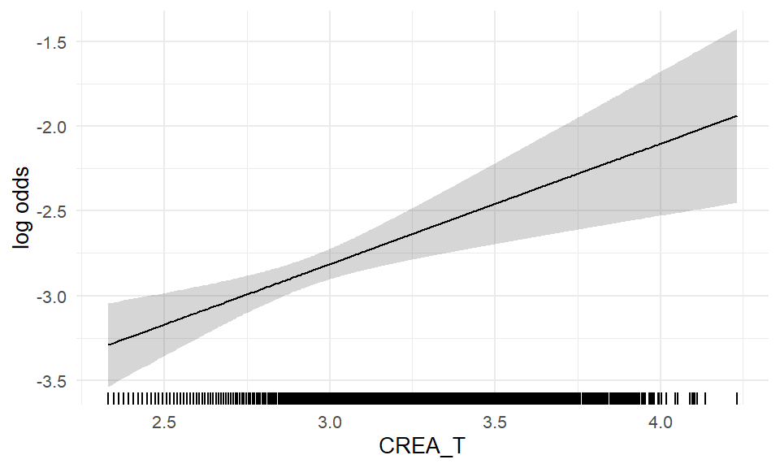
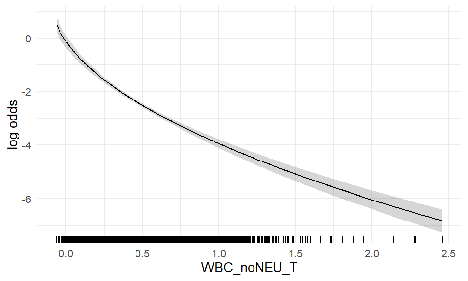

Define key predictors without pseudo-log transform (‘orig’) and transformed (‘trans’).
In the following examples we use the Bacteremia data with complete observations regarding the key predictors PLT, BUN, NEU, AGE, CREA_T, WBC_noNEU_T, which represent 93.9% of the dataset w.r.t key predictors. We will fit a global logistic regression model with the outcome BACTEREMIAN (i.e. presence of bacteremia) and the key predictors as covariates. We will use pseudo-log transformations as suggested in the IDA. Within the model, all key predictors will be transformed by fractional polynomials of order 1 (df = 2).
The aim of the examples is to showcase how decisions derived from IDA influence the results of the fitted model.
B.2 Global Model
The global model will be fitted by the mfp function. If not indicated otherwise, we will use the fp-transformations of the key predictors determined in global model in all consecutive models. For all models we report McFaddens’s R² and the AUC, i.e. the area under the ROC curve, and boxplots comparing “BACTEREMIAN” predictions with outcomes.
B.2.1 Model Summary
The global model is specified as print(global_formula, quote = TRUE). The model is fit to the complete cases data on the transformed scale stored in the data set data_model_trans.
Report the global model fit.
global model - including transformed variables
term
estimate
std.error
statistic
p.value
(Intercept)
−2.70
0.59
−4.59
4.52 × 10−6
I((WBC_noNEU_T + 0.1)^0.5)
−5.22
0.25
−20.51
1.71 × 10−93
I(((NEU + 0.1)/10)^0.5)
1.53
0.12
13.09
3.89 × 10−39
I((AGE/100)^1)
1.69
0.20
8.49
2.15 × 10−17
I(CREA_T^1)
0.71
0.20
3.60
3.23 × 10−4
I(((PLT + 1)/100)^1)
−0.08
0.03
−2.57
1.03 × 10−2
I((BUN/10)^1)
0.01
0.02
0.43
6.65 × 10−1
Plot predictions by outcome and report the model AUC.
Global model - including covariates on the transformed psuedo log scale
B.2.2 Functional forms of global model
We now take a look at the functional forms of the covariates in the global model, which are determined by the fp algorithm. Besides scaling factors, only for WBC_noNEU_T the fp algorithm chose a non-linear transformation (note the ‘^0.5’ in the term column). This means all other covariates enter the model in a linear fashion. In the following effect plots, each variable is adjusted to the median of the other variables in the model.

(a)

(b)

(c)

(d)

(e)

(f)
Figure B.1: Functional forms of global model - repeats over plots
B.3 Example 1: to transform or not to transform
Only for one out of the six key predictors did the fp algorithm chose a non-linear transformation. But out of those six variables, four were pseudo-log transformed before entering the model. In the first example we want to compare the global model to a model using the key predictors on their original scale.
Global model without pseudo-log tranformations
term
estimate
std.error
statistic
p.value
(Intercept)
−3.18
0.28
−11.17
5.48 × 10−29
log((WBC_noNEU + 0.2))
−1.25
0.06
−20.22
5.92 × 10−91
I(((NEU + 0.1)/10)^0.5)
1.52
0.12
12.99
1.34 × 10−38
I((AGE/100)^1)
1.64
0.20
8.26
1.51 × 10−16
I(((PLT + 1)/100)^1)
−0.08
0.03
−2.53
1.13 × 10−2
I((BUN/10)^1)
0.02
0.02
0.68
5.00 × 10−1
I(CREA^-0.5)
−0.77
0.21
−3.69
2.20 × 10−4
Note the different fp-transformation arising when the key predictors are not pseudo-log transformed. On the original scale, three covariates instead of one now enter the model via a non-linear fp-transformation. This suggests that a transformation prior to the regression model ‘outsources’ the need for transformations within the model. Now let us compare the model performances.
Global model(s) with covariates on original and transformed scale.
With regards to McFadden’s R² and the AUC, the differences between the two approaches is marginal.
Next we will compare the differences of the functional forms in the two models for those covariates where a pseudo-log transformation was suggested in IDA. We will look at the log odds for bacteremia by each covariate on the original and the transformed scale, and compare the global model using the original and the pseudo-log transformed covariates. Each variable is adjusted for the median of all other variables used.
Comparing functional form of both global models.
B.4 Example 2: the support of a model determines what it can explain
Next we compare the global model to a model were for an important variable, in our case we chose age, the variable support is reduced to the central 50% of the data (i.e. data within the 25% and 75% quantiles). Again, in the reduced models we use the same fp-transformations as in the global model.
data
AUC
scaled Brier score
complete
0.731
0.06484
central 50%
0.722
0.05286
50% sample
0.736
0.06543
Model predictions based on different missing data scenarios.
B.5 Example 3: the limits of mulitiple imputation
To show the effect of multiple imputation if the number of missing values is high, we construct a dataset with 50% artificially generated missing values in one variable. First, recall the output of the complete model, relying on the Bacteremia data with complete cases regarding the key predictors.
global model
term
estimate
std.error
statistic
p.value
(Intercept)
−2.70
0.59
−4.59
4.52 × 10−6
I((WBC_noNEU_T + 0.1)^0.5)
−5.22
0.25
−20.51
1.71 × 10−93
I(((NEU + 0.1)/10)^0.5)
1.53
0.12
13.09
3.89 × 10−39
I((AGE/100)^1)
1.69
0.20
8.49
2.15 × 10−17
I(CREA_T^1)
0.71
0.20
3.60
3.23 × 10−4
I(((PLT + 1)/100)^1)
−0.08
0.03
−2.57
1.03 × 10−2
I((BUN/10)^1)
0.01
0.02
0.43
6.65 × 10−1
Creatinine (‘CREA’) is significant at a level that might not survive substantial missingness. We thus create a dataset were we artificially introduce 50% missing creatinine values, missing completely at random.
Next we fit a ‘complete case’ model in the case of missing creatinine data, using the fp-transformations from the global model.
Now we impute the missing creatinine data using MICE with 50 imputations, fit the model using the fp-transformations from the global model and pool the results.
We now can compare the outputs of the complete model, the complete model with missing data (i.e. only half of the original complete data is used), and the imputed model.
Comparison of the complete model, the complete model with missing data
term
model
estimate
std.error
statistic
p.value
(Intercept)
global model
−2.696
0.588
−4.586
4.52 × 10−6
missing, complete cases
−2.614
0.839
−3.117
1.82 × 10−3
missing, imputed
−2.475
0.772
−3.207
1.52 × 10−3
I(((NEU + 0.1)/10)^0.5)
global model
1.525
0.117
13.087
3.89 × 10−39
missing, complete cases
1.608
0.166
9.699
3.05 × 10−22
missing, imputed
1.523
0.117
13.060
0.00
I(((PLT + 1)/100)^1)
global model
−0.082
0.032
−2.566
1.03 × 10−2
missing, complete cases
−0.126
0.047
−2.713
6.67 × 10−3
missing, imputed
−0.078
0.032
−2.440
1.47 × 10−2
I((AGE/100)^1)
global model
1.689
0.199
8.485
2.15 × 10−17
missing, complete cases
1.973
0.288
6.850
7.37 × 10−12
missing, imputed
1.671
0.199
8.389
0.00
I((BUN/10)^1)
global model
0.010
0.024
0.433
6.65 × 10−1
missing, complete cases
0.006
0.035
0.169
8.66 × 10−1
missing, imputed
0.016
0.029
0.577
5.64 × 10−1
I((WBC_noNEU_T + 0.1)^0.5)
global model
−5.217
0.254
−20.511
1.71 × 10−93
missing, complete cases
−5.374
0.363
−14.785
1.83 × 10−49
missing, imputed
−5.216
0.255
−20.495
0.00
I(CREA_T^1)
global model
0.712
0.198
3.596
3.23 × 10−4
missing, complete cases
0.664
0.283
2.347
1.89 × 10−2
missing, imputed
0.634
0.269
2.360
1.92 × 10−2
The z-statistic for creatinine drops from 2.98 to 1.49 when half the data is missing. Also in other variables the z-statistic is less extreme in the ‘missing, complete case analysis’ compared to the global model. The interesting observations is that MI recreates estimates and standard errors very close to the global model in most variables, but not in the one that was being imputed, namely creatinine. In variable selection, creatinine, which is highly significant in the ‘true’ model, is likely to be dropped, based on the imputed data.
B.6 Example 4: Interpretation of regression coefficient ‘size’
The variables WBC_noNEU and WBC_noNEU_T are on two very different scales:
Plot
Table the standardized regression coefficients.
Global model - standardized regression estimates
term
estimate
I((WBC_noNEU_T + 0.1)^0.5)
−5.217
I(((NEU + 0.1)/10)^0.5)
1.525
I((AGE/100)^1)
1.689
I(CREA_T^1)
0.712
I(((PLT + 1)/100)^1)
−0.082
I((BUN/10)^1)
0.010
Table standardized coefficients.
Global model - standardized regression coefficients
variable
standardized beta
WBC_noNEU
0.7024
NEU
8.5615
AGE
0.3071
CREA
0.1562
PLT
0.0993
BUN
0.1802
Let us recall the two estimates to the covariates WBC_noNEU and WBC_noNEU_T.
Comparing original scale and transformed
term
estimate
I((WBC_noNEU_T + 0.1)^0.5)
−5.22
log((WBC_noNEU + 0.2))
−1.25
(Suggestion: show this with models without fp transform?)
Because the fp-transformations further complicate the interpretation of the regression coefficients, let us consider two logisitc regression models with WBC_noNEU and t_WBC_noNEU as single covariate, respectively.
Comparing original scale and transformed
term
estimate
WBC_noNEU
−0.56
WBC_noNEU_T
−2.88
The estimates -0.56 and -2.88 the change in log odds for the outcome when the ‘term’ variable changes by 1 unit, but cannot be compared directly. A \(1\) unit change is only a small step on the original scale, where WBC_noNEU covers values from -0.15 up to 152.74. In comparison, WBC_noNEU_T lies between up to -, so change of \(1\) unit cover almost half the range of the variable.
B.7 Example 5: Plot of functional form should be resticted to areas with high density
The functional forms have wide confidence intervals when the data is sparse. In presentations of the effects, plots of the functional forms can be limited to areas with high density. In this analysis, PLT was very sparse above ~800 [UNITS], which is reflected in a large confidence interval for high PLT values. In the effect plot PLT values could be limited to values <800 [UNITS].
Model predictions
WBC_noNEU comparison
PLT comparison
Source Code
# Supplementary Example {.appendix}```{r setup-supplement, message = FALSE, warning = FALSE, echo=FALSE}library(here)library(dplyr)library(tidyr)library(purrr)library(ggplot2)library(mfp)library(mice)library(patchwork)library(stringr)library(ggthemes)library(gt)library(gtExtras)library(stats)library(pROC)library(Hmisc)set.seed(1972)## Read data - load final dataADLB <-readRDS(here::here("data", "ADLB_final.rds"))ADSL <-readRDS(here::here("data", "ADSL_final.rds"))## source utility functions source(here("R", "fun_ida_trans.R"))source(here("R", "tidy_mfp.R"))source(here("R", "fun_suppl_utilities.R"))```## OverviewDefine key predictors without pseudo-log transform ('orig') and transformed ('trans').```{r overview, message = FALSE, warning = FALSE, echo=FALSE}## Set up the data for the supplement examples # Complete cases data on the original scale - in wide format. Without outcome variable. data_model_orig <-get_model_ready_data("KEY_PRED_FL03")# Complete cases data on the pseudo log scale - in wide format. Without outcome variable. data_model_trans <-get_model_ready_data("KEY_PRED_FL04")## calculate the dimensions of data after removing incomplete casespct_complete <-dim(data_model_trans)[1] /dim(ADSL)[1] *100## store the key predictors in a listkey_predictors <- data_model_trans |>select(-USUBJID, -BACTEREMIAN) |>names() ```In the following examples we use the Bacteremia data with complete observations regarding the key predictors `r paste(key_predictors, collapse = ', ')`, which represent `r round(pct_complete, 1)`% of the dataset **w.r.t key predictors**. We will fit a global logistic regression model with the outcome **BACTEREMIAN** (i.e. presence of bacteremia) and the key predictors as covariates. We will use pseudo-log transformations as suggested in the IDA. Within the model, all key predictors will be transformed by fractional polynomials of order 1 (df = 2).The aim of the examples is to showcase how decisions derived from IDA influence the results of the fitted model.## Global ModelThe global model will be fitted by the *mfp* function. If not indicated otherwise, we will use the fp-transformations of the key predictors determined in global model in all consecutive models. For all models we report McFaddens's R² and the AUC, i.e. the area under the ROC curve, and boxplots comparing "**BACTEREMIAN**" predictions with outcomes.### Model Summary```{r global model, message = FALSE, warning = FALSE}## use transformed data formula <-as.formula(paste(c(" ~ ", paste(key_predictors, collapse="+")), collapse=""))global_formula <-as.formula(paste0('BACTEREMIAN ~ ', paste(paste0(paste0('fp(', key_predictors), ',df=2)'), collapse =' + ')))```The global model is specified as `print(global_formula, quote = TRUE)`. The model is fit to the complete cases data on the **transformed** scale stored in the data set `data_model_trans`. ```{r fit global model, message = FALSE, warning = FALSE, fig.width=4, fig.height=3}fit_mfp_trans <-mfp(global_formula,data = data_model_trans,family = binomial)# save global formula with fp-trafosglobal_formula_fp <-paste('BACTEREMIAN ~ ', paste0(tidy(fit_mfp_trans)$term[-1], collapse =' + '))```Report the global model fit. ```{r report global model, message = FALSE, warning = FALSE}tidy(fit_mfp_trans) |>gt_model_table(title ='global model - including transformed variables') |>gt_theme_538()#Mc Fadden's R²#r_squared_mcfadden <- with(summary(fit_mfp_trans), 1 - deviance/null.deviance)```Plot predictions by outcome and report the model AUC. ```{r global model auc, message = FALSE, warning = FALSE, echo=FALSE, fig.width=4, fig.height=3, fig.cap= "Global model - including covariates on the transformed psuedo log scale"}#logreg_summary_plot(fit_mfp_trans, 'global model - including covariates on transformed scale')logreg_summary_plot(fit_mfp_trans)```### Functional forms of global modelWe now take a look at the functional forms of the covariates in the global model, which are determined by the fp algorithm. Besides scaling factors, only for `WBC_noNEU_T` the fp algorithm chose a non-linear transformation (note the '\^0.5' in the term column). This means all other covariates enter the model in a linear fashion. In the following effect plots, each variable is adjusted to the median of the other variables in the model.```{r global model functional forms, message = FALSE, warning = FALSE, fig.width=5, fig.height=3}#| label: fig-charts#| fig-cap: "Functional forms of global model - repeats over plots"#| fig-subcap: #| - ""#| - ""#| - ""#| - "" #| - ""#| - ""#| layout-ncol: 3 for(predictor in key_predictors){ p <-plot_model_covariates (data = data_model_trans, fit_model = fit_mfp_trans, predictor = predictor)print(p)if(predictor =='PLT'){ p_effect_PLT <- p} # save for example 5}```## Example 1: to transform or not to transformOnly for one out of the six key predictors did the fp algorithm chose a non-linear transformation. But out of those six variables, four were pseudo-log transformed before entering the model. In the first example we want to compare the global model to a model using the key predictors on their original scale.```{r ex1: global model orignal, message = FALSE, warning = FALSE, fig.width=2, fig.height=3}# fit the complete mfp model using only original, non-transformed variableskey_predictors_orig <- data_model_orig |>select(-USUBJID, -BACTEREMIAN) |>names() global_formula_orig <-as.formula(paste0('BACTEREMIAN ~ ', paste(paste0(paste0('fp(', key_predictors_orig), ',df=2)'), collapse =' + ')))#print(global_formula_orig, quote = TRUE)``````{r ex1: fit global model orignal, message = FALSE, warning = FALSE, fig.width=2, fig.height=3}fit_mfp_orig <-mfp(global_formula_orig,data = data_model_orig,family = binomial)``````{r ex1: print fit - global model orignal, message = FALSE, warning = FALSE, fig.width=2, fig.height=3}fit_mfp_orig |>tidy() |>gt_model_table('Global model without pseudo-log tranformations') ```Note the different fp-transformation arising when the key predictors are not pseudo-log transformed. On the original scale, three covariates instead of one now enter the model via a non-linear fp-transformation. This suggests that a transformation prior to the regression model 'outsources' the need for transformations within the model. Now let us compare the model performances.```{r ex1: plot side by side, message = FALSE, warning = FALSE, fig.width=4, fig.height=6, fig.cap= "Global model(s) with covariates on original and transformed scale."}p_model_orig <-logreg_summary_plot(fit_mfp_orig, "Original scale") p_model_trans <-logreg_summary_plot(fit_mfp_trans, "Psuedo log transformed") (p_model_orig +theme(axis.title.x =element_blank())) / (p_model_trans +theme(plot.subtitle =element_blank()))```With regards to McFadden's R² and the AUC, the differences between the two approaches is marginal.Next we will compare the differences of the functional forms in the two models for those covariates where a pseudo-log transformation was suggested in IDA. We will look at the log odds for bacteremia by each covariate on the original and the transformed scale, and compare the global model using the original and the pseudo-log transformed covariates. Each variable is adjusted for the median of all other variables used.```{r trafo of variables, message = FALSE, warning = FALSE, fig.width=6, fig.height=4}#| layout-ncol: 2 #| fig-cap: "Comparing functional form of both global models. "#| fig-subcap: #| - ""#| - ""for(predictor in key_predictors){if(!(predictor %in% key_predictors_orig)) { p <-plot_compare_model_predictions(predictor = predictor,data_model_trans = data_model_trans,fit_mfp_trans = fit_mfp_trans,data_model_orig = data_model_orig, fit_mfp_orig = fit_mfp_orig )print(p) }}```## Example 2: the support of a model determines what it can explainNext we compare the global model to a model were for an important variable, in our case we chose age, the variable support is reduced to the central 50% of the data (i.e. data within the 25% and 75% quantiles). Again, in the reduced models we use the same fp-transformations as in the global model.```{r example2: prediction validity, message = FALSE, warning = FALSE, fig.width=6, fig.height=4}m_pct <- .5sel_central <- (data_model_orig$AGE >quantile(data_model_orig$AGE, 0.5-m_pct/2)) & (data_model_orig$AGE <quantile(data_model_orig$AGE, 0.5+m_pct/2)) #needed latersel_sample <-as.logical(round(runif(dim(data_model_orig)[1]))) # 50% random selection, needed laterpred_complete <-predict(fit_mfp_trans, newdata = data_model_trans,type ='response')y_complete <- fit_mfp_trans$ypred_central <-predict(fit_mfp_trans, newdata = data_model_trans[sel_central,],type ='response')y_central <- fit_mfp_trans$y[sel_central]pred_sample <-predict(fit_mfp_trans, newdata = data_model_trans[sel_sample,],type ='response')y_sample <- fit_mfp_trans$y[sel_sample]``````{r example2: table scenarios, message = FALSE, warning = FALSE, fig.width=6, fig.height=4}tribble(~data, ~AUC, ~`scaled Brier score`,'complete', auc(y_complete, pred_complete) |>as.numeric(), cor(y_complete, pred_complete)^2,'central 50%', auc(y_central, pred_central) |>as.numeric(), cor(y_central, pred_central)^2,'50% sample', auc(y_sample, pred_sample) |>as.numeric(), cor(y_sample, pred_sample)^2,) |>gt() %>%fmt_number(2, decimals =3) |>fmt_number(3, decimals =5) |>gt_theme_538()``````{r example2: plot, message = FALSE, warning = FALSE, fig.width=6, fig.height=5}#| fig-cap: "Model predictions based on different missing data scenarios."p_ex2 <-rbind(tibble(BC = y_complete,prediction = pred_complete,model ='complete data' ),tibble(BC = y_central,prediction = pred_central,model ='within IQR (age)' ),tibble(BC = y_sample,prediction = pred_sample,model ='random 50% subsample' ) ) |>mutate(model =factor( model,levels =c('complete data', 'within IQR (age)', 'random 50% subsample') ),outcome =if_else(BC ==1, "Yes", "No")) |>ggplot(aes(x = outcome, y = prediction, group = outcome)) +geom_boxplot(width = .4) +scale_y_continuous(limits =c(0, 1)) +facet_wrap(~ model, ncol =1, strip.position ="top") +coord_flip() +theme_light(base_size =10) +labs(title ='Presence of bacteremia',y ='prediction') +theme(axis.title.y =element_blank(),panel.grid.major.y =element_blank(),panel.grid.minor.y =element_blank(),strip.text =element_text(angle =0, hjust =0) )p_ex2```## Example 3: the limits of mulitiple imputationTo show the effect of multiple imputation if the number of missing values is high, we construct a dataset with 50% artificially generated missing values in one variable. First, recall the output of the complete model, relying on the Bacteremia data with complete cases regarding the key predictors.```{r ex3: table global model, message = FALSE, warning = FALSE}fit_mfp_trans |>tidy() |>gt_model_table('global model') |>gt_theme_538()```Creatinine ('CREA') is significant at a level that might not survive substantial missingness. We thus create a dataset were we artificially introduce 50% missing creatinine values, missing completely at random.```{r ex3: create missing crea, message = FALSE, warning = FALSE, fig.width = 10, fig.height=6, fig.width=12}# create 50% missings for t_KREAdata_model_trans_missings <- data_model_trans |>mutate(CREA_T =ifelse(runif(dim(data_model_orig)[1]) < .5, #~50%/50% TURE/FALSE CREA_T,NA ) )```Next we fit a 'complete case' model in the case of missing creatinine data, using the fp-transformations from the global model.```{r ex3: fit model, message = FALSE, warning = FALSE}fit_mfp_missing <-glm(as.formula(global_formula_fp), #use same fp-trafos as in global modeldata = data_model_trans_missings,family = binomial)```Now we impute the missing creatinine data using MICE with 50 imputations, fit the model using the fp-transformations from the global model and pool the results.```{r ex3: multiple imputation, message = FALSE, warning = FALSE, echo=FALSE, results='hide'}# imputeimp_data <-mice(data_model_trans_missings |>select(BACTEREMIAN, key_predictors), m=50, maxit =50, method='pmm', seed =1)# fit imputed dataimp_fits <-with(imp_data,glm(as.formula(global_formula_fp), #use same fp-trafos as in global modelfamily = binomial) )# pooled resultsfit_pooled <-pool(imp_fits)```We now can compare the outputs of the complete model, the complete model with missing data (i.e. only half of the original complete data is used), and the imputed model.```{r ex3: imputation comparison, message = FALSE, warning = FALSE}comparison_data <-bind_rows(tidy(fit_mfp_trans) |>mutate(model ='global model'),tidy(fit_mfp_missing) |>mutate(model ='missing, complete cases'),summary(fit_pooled) |>select(-df) |>as_tibble() |>mutate(model ='missing, imputed') ) |>relocate(term, model) |>arrange(term, model) |>group_by(term) |>group_by(term_old = term) |>mutate(term =c(unique(term_old), rep('', n()-1)) ) |>ungroup () |>select(-term_old)## table comparisonscomparison_data |>gt() |>fmt_number(3:5,decimals =3 ) |>fmt_scientific(6) |>tab_header(title ="Comparison of the complete model, the complete model with missing data") |>gt_theme_538()```The z-statistic for creatinine drops from 2.98 to 1.49 when half the data is missing. Also in other variables the z-statistic is less extreme in the 'missing, complete case analysis' compared to the global model. The interesting observations is that MI recreates estimates and standard errors very close to the global model in most variables, but not in the one that was being imputed, namely creatinine. In variable selection, creatinine, which is highly significant in the 'true' model, is likely to be dropped, based on the imputed data.```{r ex3: z statistics, message = FALSE, warning = FALSE}#pearson & spearman correalation of CREA and BUNr_pearson <-cor(data_model_trans$CREA_T, data_model_trans$BUN, method ='pearson') |>round(3)r_spearman <-cor(data_model_trans$CREA_T, data_model_trans$BUN, method ='spearman') |>round(3)```## Example 4: Interpretation of regression coefficient 'size'The variables WBC_noNEU and WBC_noNEU_T are on two very different scales:Plot```{r ex 4 plots, message = FALSE, warning = FALSE, fig.width=10, fig.height=4}#| fig-cap: "Distribution of key predictors including transformed variables"p_ex4 <- data_model_trans |>select(key_predictors) |>pivot_longer(cols =everything()) |>ggplot(aes(x = value, group = name)) +facet_wrap(~name, scales ='free', strip.position ="bottom") +geom_histogram(fill ='firebrick2', color =NA, alpha =0.5, bins =200) +theme_minimal(base_size =10) +theme(strip.placement ='outside', axis.title =element_blank(), axis.text.y =element_blank())p_ex4```Table the standardized regression coefficients. ```{r ex 4 table fit, message = FALSE, warning = FALSE, fig.width=4, fig.height=4}# standardized regression coefficientstidy(fit_mfp_trans) |>select(term, estimate) |>filter(term !='(Intercept)') |>gt() |>tab_header(title ="Global model - standardized regression estimates") |>fmt_number(estimate, decimals =3) |>gt_theme_538()```Table standardized coefficients. ```{r ex 4 coeffs, message = FALSE, warning = FALSE, fig.width=4, fig.height=4}data_model_trans |>summarise(WBC_noNEU =sd(((WBC_noNEU_T +0.1) ^0.5) * fit_mfp_trans$coefficients[2]),NEU =sd((NEU +0.1) * fit_mfp_trans$coefficients[3]),AGE =sd((AGE /100) * fit_mfp_trans$coefficients[4]),CREA =sd((CREA_T) * fit_mfp_trans$coefficients[5]),PLT =sd(((PLT +1) /100) * fit_mfp_trans$coefficients[6]),BUN =sd((BUN) * fit_mfp_trans$coefficients[7]) ) |>pivot_longer(cols =everything(),names_to ='variable',values_to ='standardized beta') %>%gt() |>fmt_number(2, decimals =4) |>tab_header(title ="Global model - standardized regression coefficients") |>gt_theme_538()```Let us recall the two estimates to the covariates `WBC_noNEU` and `WBC_noNEU_T`.```{r ex 4 estimates, message = FALSE, warning = FALSE}bind_rows(tidy(fit_mfp_trans) |>select(term, estimate),tidy(fit_mfp_orig) |>select(term, estimate) ) |>filter(str_detect(term, 'WBC')) |>gt() |>fmt_number(2, decimals =2) |>tab_header(title ="Comparing original scale and transformed") |>gt_theme_538()```(Suggestion: show this with models without fp transform?)Because the fp-transformations further complicate the interpretation of the regression coefficients, let us consider two logisitc regression models with WBC_noNEU and t_WBC_noNEU as single covariate, respectively.```{r ex 4 estimates2, message = FALSE, warning = FALSE}fit_wbc_orig <-glm(BACTEREMIAN ~ WBC_noNEU,data = data_model_orig,family = binomial) fit_wbc_trans <-glm(BACTEREMIAN ~ WBC_noNEU_T,data = data_model_trans,family = binomial) bind_rows(tidy(fit_wbc_orig),tidy(fit_wbc_trans) ) |>filter(str_detect(term, 'WBC')) |>select(term, estimate) |>gt() |>fmt_number(estimate, decimals =2) |>tab_header(title ="Comparing original scale and transformed") |>gt_theme_538()#fit_wbc_orig$coefficients[2] |> round(2)```The estimates `r fit_wbc_orig$coefficients[2] |> round(2)` and `r fit_wbc_trans$coefficients[2] |> round(2)` the change in log odds for the outcome when the 'term' variable changes by 1 unit, but cannot be compared directly. A $1$ unit change is only a small step on the original scale, where WBC_noNEU covers values from `r range(data_model_orig$WBC_noNEU)[1]` up to `r range(data_model_orig$WBC_noNEU)[2]`. In comparison, WBC_noNEU_T lies between `r round(range(data_model_orig$WBC_noNEU_T)[1],2)` up to `r round(range(data_model_orig$WBC_noNEU_T)[2],2)`, so change of $1$ unit cover almost half the range of the variable.## Example 5: Plot of functional form should be resticted to areas with high densityThe functional forms have wide confidence intervals when the data is sparse. In presentations of the effects, plots of the functional forms can be limited to areas with high density. In this analysis, PLT was very sparse above \~800 \[UNITS\], which is reflected in a large confidence interval for high PLT values. In the effect plot PLT values could be limited to values \<800 \[UNITS\].```{r ex5: fit , message = FALSE, warning = FALSE, fig.width=8, fig.height=4}#| fig-cap: "Model predictions"model_df_medians <-calc_medians(data_model_trans)fit_linear_complete <-glm(as.formula(paste0('BACTEREMIAN ~ ', paste(key_predictors, collapse ='+'))),data = data_model_trans,family ='binomial') new_data <-bind_cols( model_df_medians[,names(model_df_medians) !='WBC_noNEU_T'],WBC_noNEU_T = data_model_trans[,'WBC_noNEU_T'] ) |>as_tibble() |>distinct()pred_linear <-predict(fit_linear_complete,newdata = new_data, # is needed so predict finds the variablestype ='link', se.fit =TRUE)pred_complete <-predict(fit_mfp_trans, newdata = new_data, # is needed so predict finds the variablestype ='link', se.fit =TRUE)plot_df <-rbind(cbind( new_data,yhat = pred_linear$fit,yhat.lwr = pred_linear$fit -1.96*pred_linear$se.fit,yhat.upr = pred_linear$fit +1.96*pred_linear$se.fit,model ='linear' ),cbind( new_data,yhat = pred_complete$fit,yhat.lwr = pred_complete$fit -1.96*pred_complete$se.fit,yhat.upr = pred_complete$fit +1.96*pred_complete$se.fit,model ='mfp' ) ) %>%as_tibble() p_ex5 <- plot_df %>%ggplot(aes(x = WBC_noNEU_T, y = yhat, ymin = yhat.lwr, ymax = yhat.upr, color = model, group = model)) +geom_ribbon(alpha = .2, color =NA) +geom_line(size =1) +geom_rug(data = fit_mfp_trans$X %>% as.data.frame, aes(x = WBC_noNEU_T), inherit.aes =FALSE) +labs(y ='log odds' ) +theme_minimal() +scale_color_ptol()logreg_summary_plot(fit_linear_complete, 'linear model')``````{r ex5: plot fit , message = FALSE, warning = FALSE, fig.width=8, fig.height=4}#| fig-cap: "WBC_noNEU comparison"p_ex5 + (p_ex5 +coord_cartesian(xlim =quantile(data_model_trans$WBC_noNEU_T, c(.05,.95)), ylim =c(-4.5, -0.5))) +plot_layout(guides ='collect')``````{r example 5 plots, message = FALSE, warning = FALSE, fig.width=8, fig.height=4}#| fig-cap: "PLT comparison"#p_effect_PLT + p_effect_PLT + coord_cartesian(xlim = c(0,800)) # not working because of ggplot bug#workaround because of ggplot bugp_effect_PLT +geom_ribbon(fill =gray(.9)) +geom_line() + p_effect_PLT +coord_cartesian(xlim =c(0,800)) +geom_ribbon(fill =gray(.9)) +geom_line() +theme(axis.title.y =element_blank())```